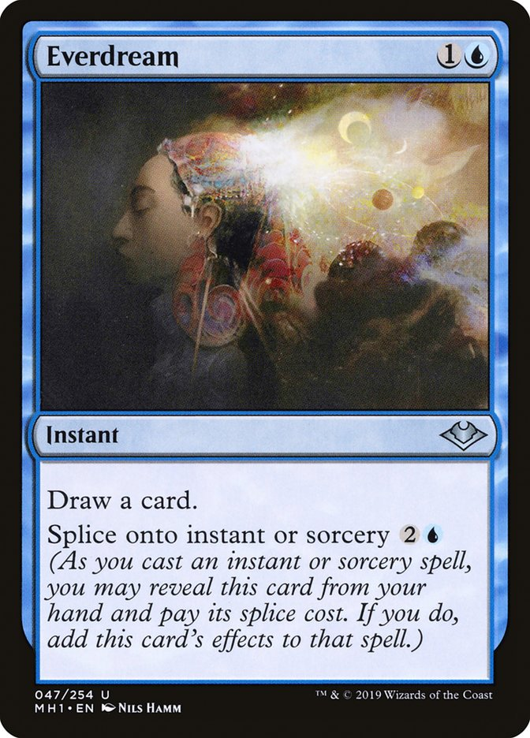

REGRAS
<<<<<<< HEAD
Se você já possui cards de Magic, fique com eles em mãos! Esses cards representam as ferramentas que você vai usar para derrotar seus oponentes. Você evocará criaturas temíveis, usará encantamentos e itens místicos e conjurará mágicas incríveis. Os cards são as peças do seu jogo, e você pode combiná-los de várias maneiras.
Como vencer uma partida
Você e seu oponente começam com 20 pontos de vida. Reduza o total de pontos de vida de seu oponente a 0 para vencer o jogo! A maneira mais comum de fazer isso é atacar seu oponente com criaturas durante o combate.
Tipos de cartas
Seu deck é composto de terrenos e criaturas, mas também pode conter feitiços, mágicas instantâneas, artefatos, encantamentos e planeswalkers! Aqui nós veremos quais são os tipos de cards e como usá-los
Cartas de Terrenos
Os cards de terreno são a base dos decks bem-sucedidos de Magic. Os terrenos fornecem mana, a energia mágica necessária para conjurar todos os outros cards do deck. Você pode jogar um terreno durante a sua fase principal em cada um dos seus turnos.
Existem cinco tipos de terrenos básicos, e cada um corresponde a uma das cinco cores de magia.
Nem todos os terrenos são terrenos básicos. Alguns terrenos não básicos viram para gerar diversas cores de mana, enquanto outros possuem outras habilidades únicas.

Mágicas
Todos os cards que não forem terrenos podem ser jogados como mágicas. Alguns tipos de mágicas são colocadas no campo de batalha e se tornam “permanentes”. Outros tipos causam um efeito e vão para o seu cemitério.
Cartas de Criaturas
As criaturas são permanentes que representam seus lacaios. Durante o combate, elas podem atacar seus oponentes e defendê-lo de ataques. Você pode conjurar mágicas de criatura durante a sua fase principal.
As mágicas têm um custo de mana que pode ser visto no canto superior direito da carta.
As habilidades do card estão na caixa de texto. As criaturas também apresentam dois números no canto inferior direito. O primeiro mostra a quantidade de pontos de dano que a criatura causa em combate. O segundo é a resistência.
Cartas de Artefatos e Encantamentos
Artefatos e Encantamentos são permanentes que representam itens mágicos e manifestações mágicas estáveis. A maioria dos artefatos é incolor, o que significa que eles não precisam de uma cor específica de mana para serem conjurados. Alguns artefatos também são criaturas. Você pode conjurar mágicas de artefatos e de encantamentos durante a sua fase principal.
Cartas de Feitiços e Mágicas Instantâneas
Feitiços e mágicas instantâneas representam sortilégios poderosos que podem ter uma vasta gama de efeitos. Depois que esses efeitos são ativados, essas mágicas são colocadas no cemitério. Você só pode conjurar um feitiço durante a sua fase principal, no mesmo momento que conjurar criaturas e outras mágicas de permanentes. Você pode conjurar mágicas instantâneas a praticamente qualquer momento, no turno de qualquer um dos jogadores, até mesmo em resposta a outra mágica!


Planeswalkers
Os planeswalkers são aliados poderosos que você pode convocar para lutar ao seu lado.
O número no canto inferior direito do card de planeswalker é a sua “lealdade”. Ele entra em jogo com aquela quantidade de marcadores de lealdade. Ele é mandado para o demitério caso não tenha nenhum marcador de lealdade.
Cada planeswalker tem um subtipo. Se dois ou mais planeswalkers que têm um subtipo em comum estiverem em jogo, eles serão colocados nos cemitérios de seus donos.
Habilidades de planeswalker - Cada planeswalker tem uma quantidade de habilidades ativadas. Você só pode jogar uma dessas habilidades no momento em que puder jogar um feitiço, e somente se nenhuma das habilidades do planeswalker tiver sido jogada naquele turno.
O custo para jogar uma habilidade de planeswalker é adicionar ou remover uma determinada quantidade de marcadores de lealdade dele. Por exemplo, o símbolo significa “Coloque um marcador de lealdade neste planeswalker”, e o símbolo significa “Remova três marcadores de lealdade deste planeswalker.” Você não pode jogar uma habilidade com custo de lealdade negativo a menos que o planeswalker tenha no mínimo aquela quantidade de marcadores de lealdade.
Lutando com um planeswalker - Os planeswalkers podem ser atacados. Quando declara criaturas atacantes, você decide se cada um ataca o seu oponente ou um planeswalker que aquele oponente controla. Seu oponente pode bloquear normalmente, independentemente do que cada criatura está atacando. Se uma criatura causa dano de combate a um planeswalker, aquela quantidade de marcadores de lealdade é removida dele.
Outras fontes podem causar dano aos planeswalkers. Se uma mágica ou habilidade que você controla causaria dano a um oponente, em vez disso, você pode fazer com que ela cause dano a um planeswalker que aquele oponente controla. Portanto, embora não possa usar um planeswalker como alvo de Choque, você pode fazer com que o Choque que tem seu oponente como alvo cause 2 pontos de dano a um dos planeswalkers dele, em vez de ao jogador. Você não pode dividir o dano de uma fonte entre um jogador e um planeswalker. O dano causado a um planeswalker resulta naquela quantidade de marcadores de lealdade removida dele.
Conjurar Mágicas
Todos os cards que não são terrenos apresentam um custo de mana no canto superior direito. Este custo é representado por diferentes símbolos, os quais dizem que tipo de mana você deve gastar para conjurar aquela mágica. São eles:
BRANCO
A cor do equilíbrio, lei, ordem e proteção, não necessariamente uma cor “do bem”, como estamos acostumados a pensar no nosso imaginário coletivo. Um mago que usa a cor branca preza a igualdade e estão sempre prontos para curar as criaturas no campo de batalha.
As criaturas mais comuns no branco são Soldados, Cavaleiros e Anjos. As magias mais clássicas são aquelas que fazem o jogo entrar em equilíbrio, para que os jogadores tenham o mesmo número de terrenos e criaturas no campo de batalha, por exemplo. É comum nesta cor as mágicas que destroiem artefatos, encantamentos e fazem o jogador ganhar vida.
Para pagar o custo de mana, vire (na horizontal) os terrenos necessários no campo de batalha. Isso mostra que você usou os terrenos para gerar mana. Os cards virados são desvirados no início de cada um dos seus turnos, de modo a serem usados novamente.
Combate
Atacar
Durante o seu turno, você decide se vai atacar e, se sim, com quais criaturas. Você não pode atacar com criaturas viradas, nem com criaturas que tenham entrado no campo de batalha no mesmo turno. Você tem uma fase de combate no meio do seu turno, e todas as criaturas que você decidir usar para tacar atacam ao mesmo tempo.
Após decidir com quais criaturas vai atacar, vire-as. As criaturas viradas, assim como os terrenos virados, serão desviradas no início do seu próximo turno.
Na maioria das vezes, suas criaturas atacarão o oponente. Às vezes, elas também atacam os planeswalkers. Mas uma criatura nunca ataca outra criatura. Você as envia para o campo de batalha e seu oponente decide o que acontece em seguida.
Bloquear
Agora imagine que você está do outro lado do campo de batalha. Seu oponente atacou você com algumas criaturas. Se você tem criaturas desviradas, pode usá-las para bloquear. Ao bloquear, você não tem que virar a criatura. Cada criatura só pode bloquear uma criatura atacante. É possível usar várias criaturas para bloquear uma mesma criatura atacante. Neste caso, o jogador atacante decide quantos pontos de dano a criatura atacante causará a cada uma das criaturas bloqueadoras.
=======
>>>>>>> 2e217ac96a85df2d80717ea2670138e28def4719